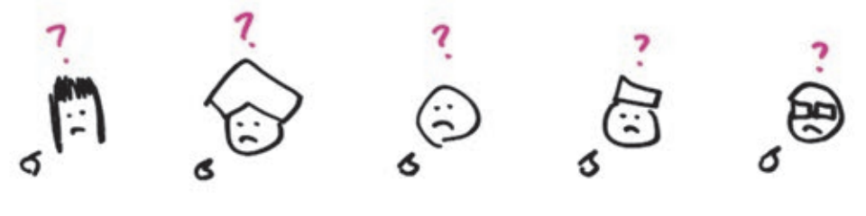

Chương 3: Ngày 2 - Thấy
Nếu định sử dụng hệ thống "nhận biết" bẩm sinh để hiểu được thế giới mà mình thấy, chúng ta cần hiểu một chút về cách hoạt động của tầm nhìn, đặc biệt cách mà hệ thống tầm nhìn hướng dẫn chúng ta trong thế giới thực.
Bởi vì chúng ta sống trong thế giới ba chiều tự nhiên, hệ thống tầm nhìn của chúng ta đã tiến hóa để thật sự hiểu được không gian ba chiều. Nó làm được điều này nhờ phá vỡ môi trường thành một hệ tọa độ ba chiều gồm chiều dài, chiều rộng và chiều cao.

Chúng ta hiểu được hầu hết thế giới tự nhiên quanh mình bởi hệ thống tầm nhìn giúp xây dựng trong đầu chúng ta một mô hình về thế giới ngoài kia. Chúng ta điều hướng một căn phòng nhờ sử dụng mô hình ba chiều mà mắt đã tạo ra.
Nhưng các vấn đề mà chúng ta đang đối mặt hiện nay không liên quan đến việc di chuyển trong không gian: chúng xoay quanh việc nhìn nhận nhiều mảnh ghép di chuyển – đôi khi đó là những thứ tự nhiên như con người, tiền bạc, hay sản phẩm, nhưng thường là những vấn đề trừu tượng như các khái niệm, các ý tưởng, ngôn ngữ, hay các quy tắc – và sau đó xây dựng một mô hình trong tâm trí để có thể hiểu được các mối liên kết giữa những mảnh ghép này.
Tôi tự hỏi liệu có điều gì cản trở trong cách vẽ các hình ảnh khiến chúng hoặc gắn kết với cách thức hoạt động của não bộ hoặc làm rối loạn guồng quay của nó. Khi kết hợp các cuốn sách giáo khoa về khoa học tầm nhìn (vision-science) và trải nghiệm tại các buổi hội thảo, tôi tìm ra một câu trả lời có khả năng làm rõ tất cả. Tôi gọi nó là mô hình 6x6.

Khi chúng ta nhìn bằng mắt, thế giới xung quanh sẽ đi vào dưới dạng ánh sáng xuyên qua võng mạc và kích hoạt các tín hiệu điện não. Chúng ta sẽ chia tách những tín hiệu đó thành các đường mòn riêng biệt để xử lý ban đầu: Ai/Cái gì, Bao nhiêu, Ở đâu, Khi nào, Như thế nào, và Tại sao. Đây chính là chìa khóa để phân tích bất kỳ vấn đề phức tạp nào thành các thành phần đơn giản mà mắt và não có thể xử lý hiệu quả.